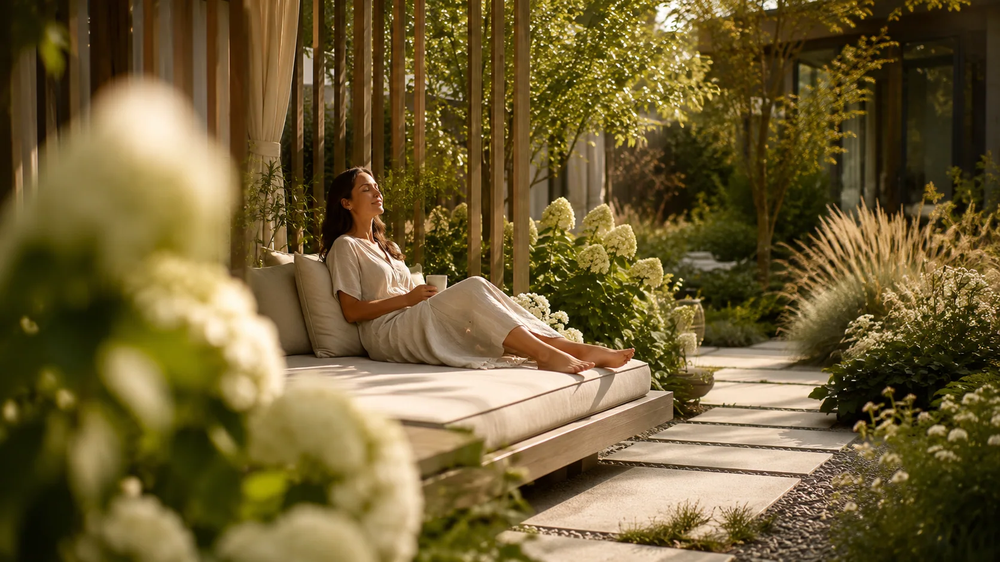
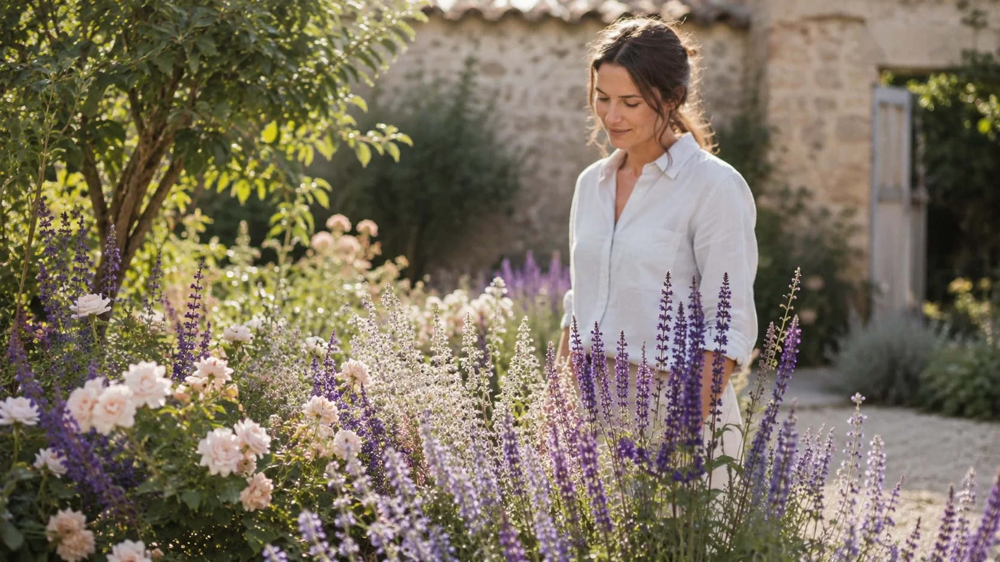
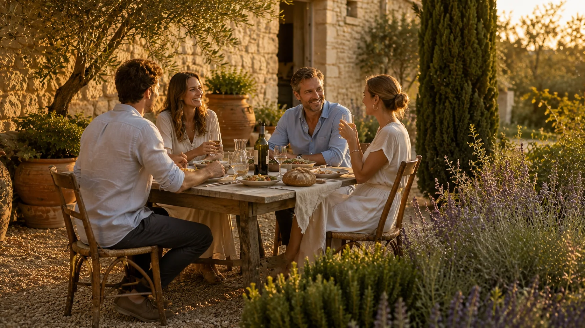

Tmavé logo
…-black.svg
Studio Šrámek · živý design systém
Tato stránka používá stejné tokeny, fonty, assety a komponentové třídy jako homepage. Aktualizuje se při každém potvrzeném milníku projektu.
01 · Identita
Pro navigaci a patičku používáme zjednodušenou horizontální variantu bez claimu. Vždy vybíráme verzi podle kontrastu podkladu.
…-black.svg

…-white.svg
02 · Foundations
Omezená přírodní paleta vychází z projektové dokumentace. Hodnoty jsou současně CSS custom properties.
#0F251F
Hlavní tmavá barva značky
#204034
Primární zelená
#BABFB4
Světlá doprovodná barva
#FFFFFF
Základní světlé pozadí
#000000
Technická a textová barva
#74261F
Výrazný akcent
#59392F
Tmavý zemitý doplněk
#A6886D
Přirozená střední barva
#D9C2A7
Hlavní teplý světlý odstín
#F2F2F2
Jemné neutrální pozadí
03 · Foundations
CoFo Gothic je licencovaný projektový font. Lehká váha nese velké nadpisy, regular běžný text a medium navigační a technické informace.
clamp(3.4rem, 7vw, 7.3rem) · 300 · 0.93
clamp(3rem, 5.4vw, 6rem) · 300 · 1
Navrhujeme zahrady jako přirozenou součást života, místa a architektury. Text zůstává klidný, čitelný a věcný.
1rem · 400 · 1.55
Atmosféra místa
0.69rem · 500 · tracking 0.16em
04 · Foundations
Vlastní grid používá předvídatelný kontejner a omezenou 8px prostorovou škálu bez Bootstrap závislosti.
8px
16px
24px
32px
48px
64px
05 · Foundations
Pohyb podporuje orientaci a rytmus. Nikdy není podmínkou pro pochopení obsahu a respektuje prefers-reduced-motion.
cubic-bezier(.22, 1, .36, 1)
Ovládání, posuny a jasná odezva.
cubic-bezier(.16, 1, .3, 1)
Reveal, dialogy a měkké přechody.
fast · medium · slow
Tři sdílené časové úrovně.
06 · Assets
Jednotná linková sada slouží jako informační podpora. Dekorativní použití držíme střídmé.
07 · UI
Primární akce používá kontrastní plnou plochu. Obrys a textový odkaz jsou určeny pro vedlejší volby.
<div class="button-row"> <a class="button button--dark" href="#">Primární akce</a> <a class="button button--outline" href="#">Sekundární akce</a> </div>
08 · Components
Ukázky používají stejné veřejné CSS třídy jako homepage. HTML lze převzít bez Reactu nebo build nástroje.
Obrazový nosič realizace s názvem, místem a rokem.
.project-card
<a class="project-card" href="#"> <img src="images/photos/zahrada-1.webp" alt="Zahrada u rodinného domu"> <span class="project-meta"> <b>Zahrada u rodinného domu</b> <small>Brandýs nad Labem · 2025</small> </span> </a>
Jedna ze čtyř hlavních oblastí nabídky.
.service-card
Hledáme charakter místa, jeho možnosti a nejlepší způsob využití.
Zjistit více ↗
<article class="service-card"> <div><span>01</span><img src="images/pictograms/kvetina.svg" alt=""></div> <h3>Návrh zahrady</h3> <p>Hledáme charakter místa, jeho možnosti a nejlepší způsob využití.</p> <a href="#">Zjistit více <span>↗</span></a> </article>
Závěrečná výzva používá linen plochu a jednu hlavní akci.
.contact-section
Začněme rozhovorem
<section class="contact-section"> <p class="eyebrow">Začněme rozhovorem</p> <h2>Pojďme společně vytvořit místo, kam se budete rádi vracet.</h2> <div class="button-row"> <a class="button button--dark" href="mailto:studio@example.cz">Napsat e-mail</a> </div> </section>
Pět nejčastějších otázek v přístupném nativním akordeonu.
Praktické informace
Ideálně ve chvíli, kdy se připravuje dům nebo jeho rekonstrukce. Návrh ale dokážeme citlivě zapojit i do již hotového prostoru; důležitý je dostatek času na zaměření, koncepci a návaznost jednotlivých profesí.
Rozsah vždy přizpůsobíme místu a vašim potřebám. Obvykle zahrnuje celkovou koncepci, práci s prostorem, materiály a výsadbou a podle dohody také podklady potřebné pro přesnou realizaci.
Ano. Na návrh může navázat projekt, realizace i následná péče. Díky tomu zůstává původní myšlenka čitelná od prvního náčrtu až po hotovou zahradu.
Ano. Smysluplná změna nemusí znamenat kompletní přestavbu. Často stačí dobře pojmenovat problém, upravit strukturu, doplnit výsadbu nebo vytvořit přirozenější vazbu mezi domem a zahradou.
Záleží na velikosti, rozsahu dokumentace a roční době. Po úvodním setkání proto připravíme srozumitelný postup a orientační harmonogram, abyste od začátku věděli, co bude následovat.
<section class="ss-faq" aria-labelledby="faq-title"> <div class="ss-faq__heading"><p class="eyebrow">Praktické informace</p><h2 id="faq-title">Na co se často ptáte.</h2></div> <div class="ss-faq__list"> <details class="ss-faq__item" name="studio-faq"> <summary><span><small>01</small>Kdy je nejlepší začít s návrhem zahrady?</span><i aria-hidden="true"></i></summary> <div class="ss-faq__answer"><div><p>Odpověď…</p></div></div> </details> </div> </section>
09 · Signature
Výrazné prvky identity mají živý náhled i jasnou hranici mezi přenositelným základem a integrační logikou celé stránky.
Čtyři překryté fotografie, synchronní claim a bezpečný Firefox fallback.




Studio Šrámek
Markup, vrstvení, crossfade, claim a ovládání.
Preload, časování, pomalejší exit scroll a textová synchronizace.
Firefox: blur crossfade bez transformace. Reduced motion: statický první snímek.
<section class="hero" data-hero> <div class="hero-media"> <img class="hero-image is-active" src="images/photos/relax-na-zahrade.webp" alt=""> <!-- Další překryté .hero-image vrstvy --> <div class="hero-shade"></div> </div> <div class="hero-content"> <p class="eyebrow eyebrow--light">Studio Šrámek</p> <h1><span>Zahrada je místo,</span><strong>kde si člověk odpočine.</strong></h1> </div> </section>
V produkci mapuje průchod sticky sekcí na čas videa. V katalogu lze princip bezpečně vyzkoušet posuvníkem.
H.264 · 1280 × 720 · 24 fps · GOP 6 · bez zvuku.
Nativní currentTime, sticky progress a krátký dojezd.
Poster při načítání; reduced motion vypíná sticky prostor i seekování.
<div class="image-claim-shell is-tunnel-experiment" data-scroll-tunnel> <section class="image-claim"> <video class="image-claim-media" muted playsinline preload="auto" poster="images/video/Woman_gently_touching_flower-poster.webp"> <source src="images/video/Woman_gently_touching_flower-scroll.mp4" type="video/mp4"> </video> <div><!-- eyebrow, h2 a podpůrný text --></div> </section> </div>
Jemná hloubková vrstva podporující karty, nikdy dominantní ilustrace.
Dekorativní vrstva
Výchozí opacity zůstává velmi nízká, aby struktura nesnižovala čitelnost.
Samostatný absolutní obrázek mimo obsahový flow.
Malý posun přes CSS proměnnou, pouze ve viewportu.
Bez JavaScriptu i při reduced motion zůstává jako statická textura.
První plně distribuovaná komponenta: carousel, karty a jeden společný dialog.
Samostatné HTML, externí CSS a malý vanilla JavaScript.
Drag, swipe, šipky, klávesnice a nekonečný loop.
Nativní dialog, focus, Escape a omezený pohyb.
<section class="ss-plant-catalog" data-ss-plant-catalog> <header class="ss-plant-catalog__heading"><!-- nadpis --></header> <div class="ss-plant-carousel" data-plant-carousel> <div class="ss-plant-carousel__track"><!-- .ss-plant-card položky --></div> </div> <dialog class="ss-plant-dialog" data-plant-dialog><!-- společný detail --></dialog> </section>
10 · Handoff
Vývojář připojí společné verzované CSS, zkopíruje podporovaný HTML blok a vymění pouze dokumentovaný obsah.
Jedna verze tokenů, typografie a komponentových tříd.
Markup z katalogu je veřejný kontrakt bez frameworku.
Texty, odkazy, obrázky a alternativní popisy.
Mobil, tablet, desktop, klávesnice a omezený pohyb.
Zdroj pro předání: používejte verzované soubory z odkazů „Kompletní balíček“, nikoli HTML zkopírované z inspektoru React stránky. Při každém potvrzeném milníku kontrolujeme tokeny, živé ukázky, markup, dokumentaci komponent a changelog společně.